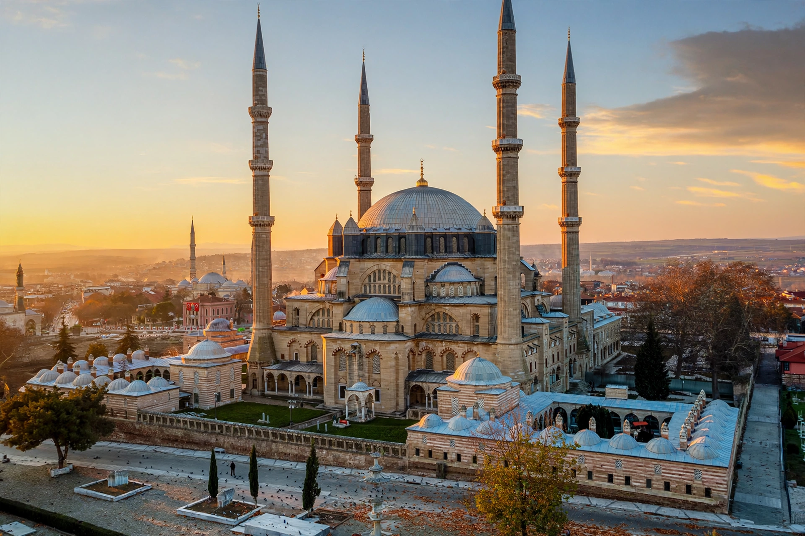

| Selimiye Mosque | |
| Location | Edirne, Turkey |
|---|---|
| Architect | Mimar Sinan |
| Built | 1568–1575 |
| Commissioned by | Sultan Selim II |
| Dome | 31.28 m internal diameter |
| Status | UNESCO World Heritage Site (2011) |
The Selimiye Mosque (Turkish: Selimiye Camii) is an Ottoman imperial mosque in Edirne, Turkey, commissioned by Sultan Selim II and built by the imperial architect Mimar Sinan between 1568 and 1575. Sinan, then in his eighties, considered it his masterpiece, and it is widely regarded as the supreme achievement of Ottoman architecture.
The mosque crowns a hill above the former Ottoman capital. Its vast dome — 31.28 metres in internal diameter, slightly larger than Hagia Sophia's — rests on eight massive piers in an octagonal support system that frees the interior from obstructing columns and floods it with light from tiers of windows. Four exceptionally slender minarets, each 83 metres tall with three balconies, frame the dome. The interior is decorated with Iznik tiles, carved marble, and a sultan's loge; the müezzin mahfili stands unusually at the centre of the hall, beneath the dome, on slender columns with a fountain below.
The surrounding külliye includes madrasas (now museums), a covered bazaar (arasta), a library, and a hospital nearby. The complex was inscribed on the UNESCO World Heritage List in 2011. Sinan's structural solution — a single unified domed space — represents the culmination of the Ottoman classical style, a counterpart in ambition to the great domed monuments of Mughal architecture built in the same century.